Físic i entorns saludables
Alimentació, activitat física, descans, serveis sanitaris i habitabilitat. El cos de la infància i l'espai on creix.
- Alfabetització alimentària crítica
- Urbanisme actiu i dinàmic
- Humanització de l'experiència clínica
Atles de Senyals Febles per a la infància
Un kit de cartes i canvas per llegir senyals febles des de les cinc dimensions del benestar infantil, i convertir-los en escenaris de futur i accions concretes.
Un senyal feble és un indicador primerenc de canvi que té poc o cap impacte en el present, però té el potencial de desencadenar grans transformacions en el futur.
Es pot entendre com una tendència abans de ser tendència: un debat emergent, un comportament que encara és minoritari, una tecnologia que encara no ha arribat al gran públic, o una pràctica social que està canviant de forma silenciosa. Sempre són més clars en retrospectiva, i per això el moment de treballar-hi és ara, quan encara són fràgils i oberts a la interpretació.
KIDS Living Lab és una iniciativa de l'IAAC i Fab Lab Barcelona que adapta la metodologia de l'Atlas of Weak Signals al sector infantil. Partim de la convicció que la infància no és només la destinatària de les polítiques i els dissenys del futur, sinó també un actor actiu en la seva construcció.
Hem revisat els senyals febles originals de l'Atlas i els hem reinterpretat des de les cinc dimensions del benestar infantil, creant un joc de cartes que connecta cada senyal amb els reptes reals de nens, famílies, educadors, institucions i empreses del sector.
El projecte combina disseny estratègic, pensament especulatiu i pedagogia maker per generar un conjunt d'eines que qualsevol facilitador pot fer servir en contextos educatius formals i informals.
Els infants són agents actius del procés. Les seves interpretacions i propostes són el centre de la metodologia.
Canvis subtils en el comportament social, tecnològic o ambiental que anticipen futurs possibles.
Escenaris a 100 anys vista com a exercici d'imaginació crítica.
Dels futurs imaginats en surten "presents alternatius": accions realitzables en els propers 10 anys.
Cada senyal, àrea d'oportunitat, fricció i disparador està vinculat a una o diverses dimensions. El repte del grup decideix per on s'hi entra.
Alimentació, activitat física, descans, serveis sanitaris i habitabilitat. El cos de la infància i l'espai on creix.
Salut mental, regulació emocional, vincles afectius i relacions socials. El món interior de la infància.
Inclusió, participació i capital social. La relació de la infància amb la seva comunitat, barri i institucions.
Oportunitats d'aprenentatge, entorns informals i competències per al futur. Com i on aprèn la infància avui.
Identitat, valors i capacitat de decisió moral. Un jo lliure i conscient en un entorn complex.
Cada família compleix una funció diferent dins la dinàmica. Els senyals febles en són el cor; la resta ajuden a obrir, tensionar i aterrar.
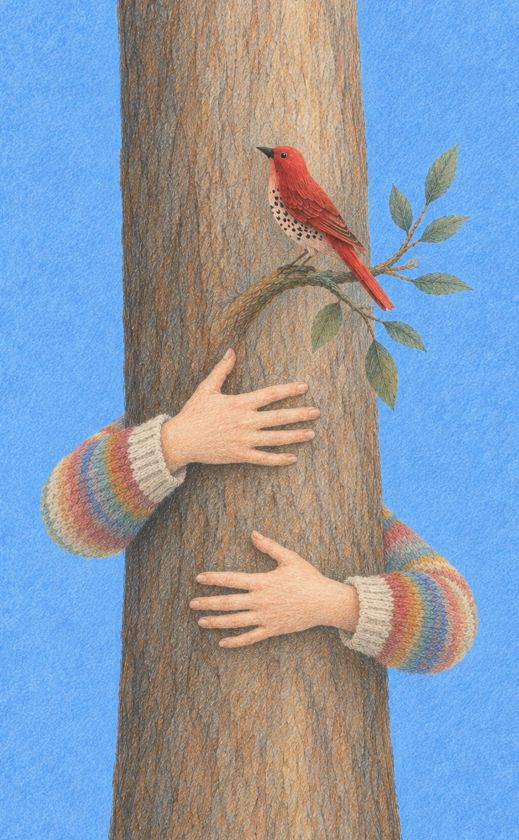
Per explorar què està canviant: comportaments, tecnologies i dinàmiques que encara no han arribat al centre.
Per obrir possibilitats. Territoris concrets d'intervenció dins de cada dimensió.
Per trencar supòsits. Preguntes provocadores que activen el pensament lateral.
Per identificar obstacles i dilemes ètics: què pot resistir o bloquejar el canvi.
Per mapar l'ecosistema: aliats, destinataris i agents de canvi.
Per adaptar el joc al teu context: nous senyals, el repte, la persona o definicions pròpies.
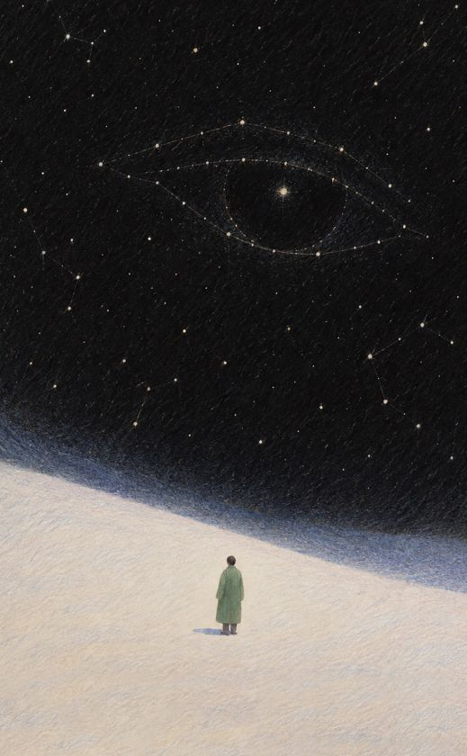
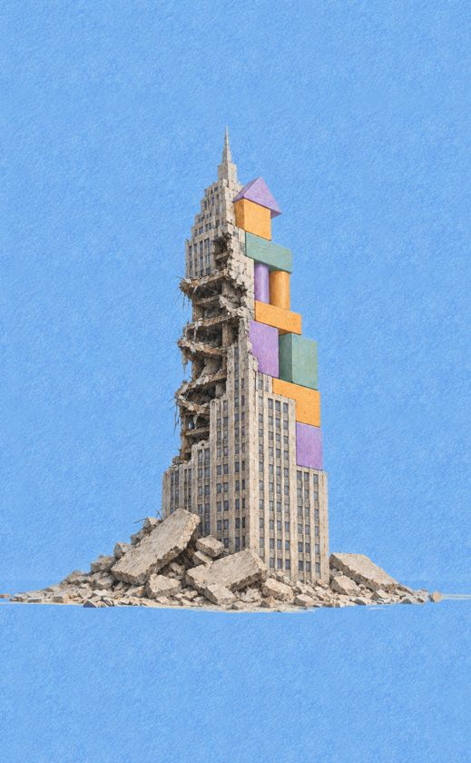
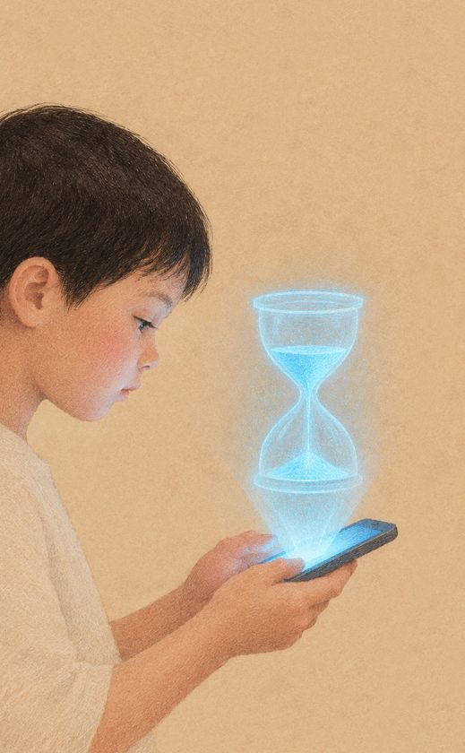
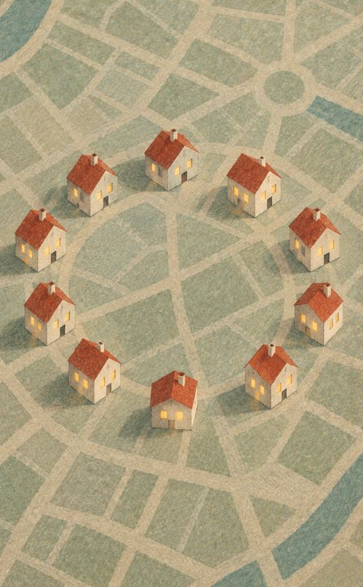
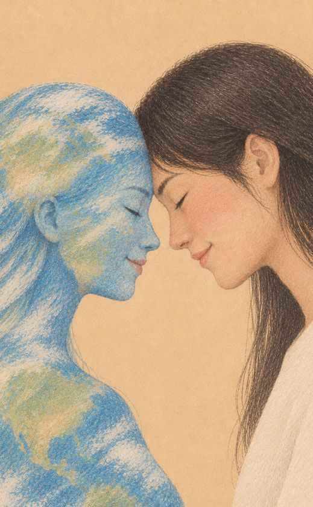
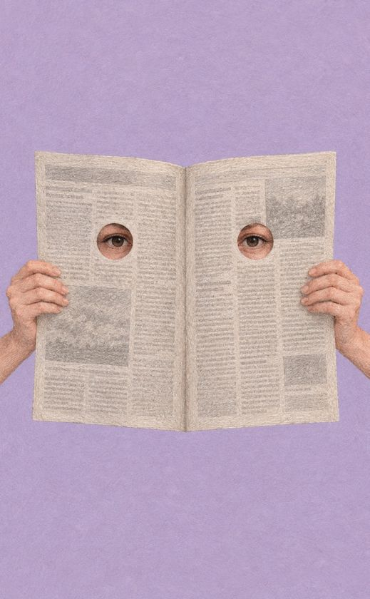
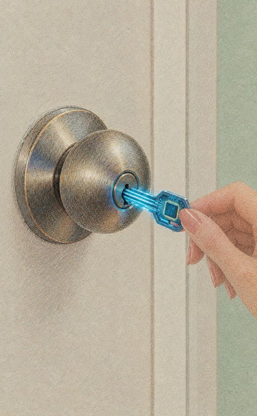
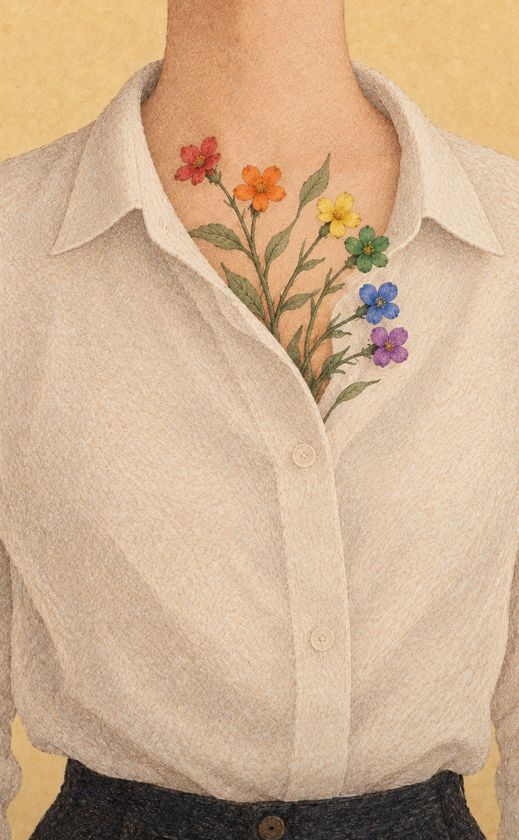
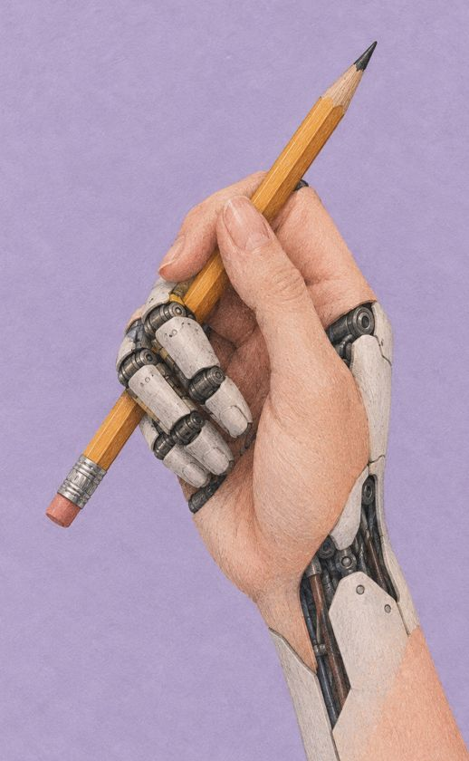
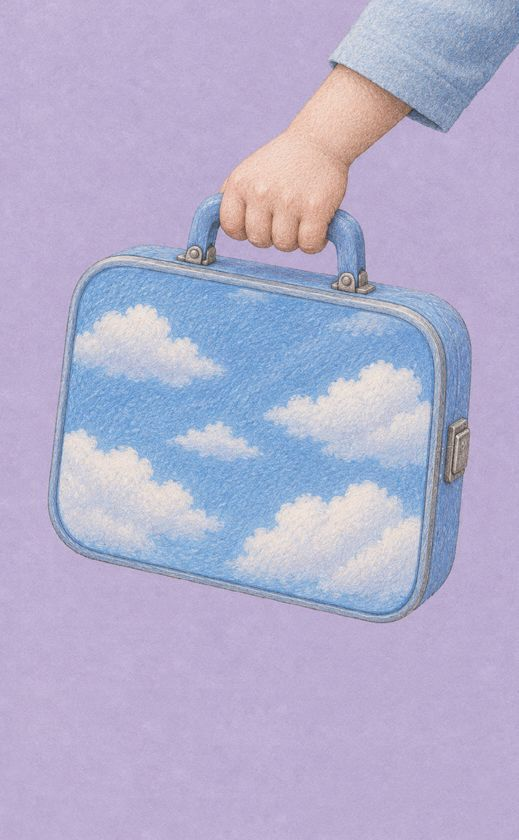
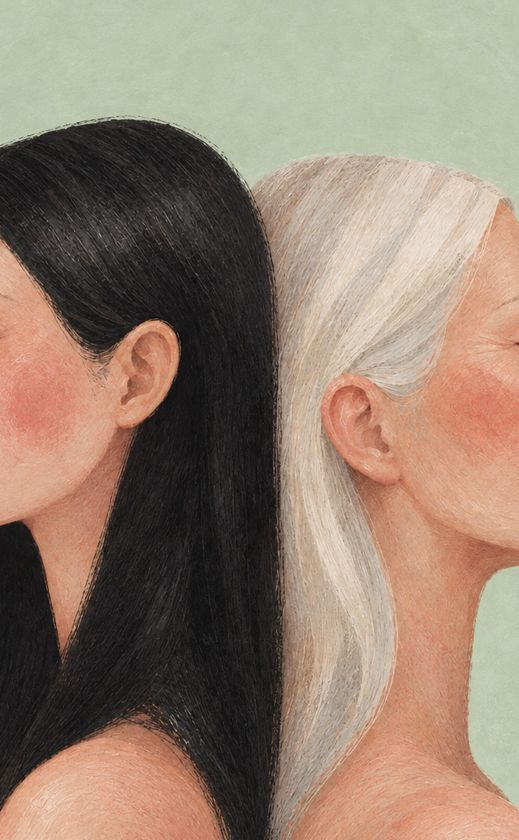
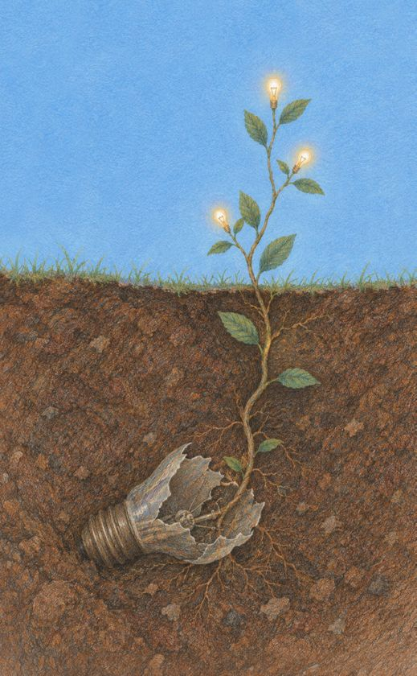
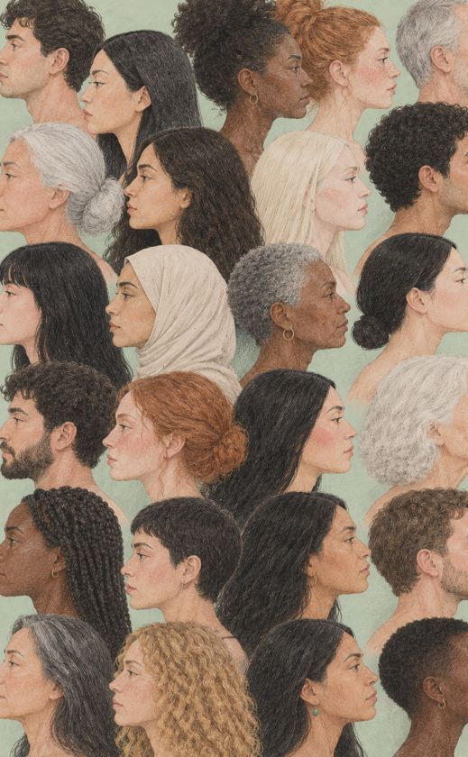
El Canvas 1 genera el material d'entrada del Canvas 2. Es poden fer en una mateixa sessió o en sessions separades.
per canvas. Canvas 1, 40–55 minuts; Canvas 2, 60–80 minuts.
participants. En grups grans, subgrups amb un facilitador per grup.
El que importa és el criteri del grup respecte al repte concret.
Quins senyals ens importen per al nostre repte?
El grup explora les cartes de Senyals Febles i les classifica col·lectivament segons la seva rellevància i interès per al repte.
Escriu-lo en una carta en blanc i col·loca-la al centre. Ajusta la redacció en consens fins que tothom en comparteixi la lectura.
Barreja el munt de Senyals Febles i reparteix-lo a parts iguals.
Primera impressió, sense bloquejar-se: Què t'evoca aquesta paraula o imatge?
Per torns, cada participant presenta una carta, el grup en debat el significat i se situa al quadrant que millor la representa en relació al repte. Si cal, s'escriu una definició pròpia al dors.
Hi ha quadrants buits o saturats? Alguna carta genera dubtes? Es poden moure cartes si el grup ho decideix.
Les cartes del quadrant Rellevant + Molt interessant passen al Canvas 2.
Resultat: un mapa consensuat de senyals classificats per rellevància i interès.
Cap on podem anar? Què fem avui?
A partir dels senyals seleccionats, el grup construeix un escenari especulatiu a 100 anys i defineix 3 accions concretes a 10 anys, els "presents alternatius", per caminar-hi.
La carta del repte del Canvas 1 passa a aquest canvas.
Qui té interès que aquest repte es resolgui bé? Qui es veuria afectat?
Els perfils que faltin s'escriuen en blanc.
Nom, edat, situació i motivacions, en una carta en blanc.
Llegiu en veu alta algunes Àrees d'oportunitat, Friccions i Disparadors per obrir l'imaginari.
Com viuen els nens i les nenes en aquest futur? Qui s'ha beneficiat? Qui ha quedat exclòs? Pot ser utòpic o distòpic.
Tres accions realitzables a 10 anys, concretes i connectades amb els senyals i l'escenari.
Hi ha coherència entre escenari i accions? Falta algun interessat que n'hauria d'assumir alguna?
Resultat: repte, interessats, persona, escenari a 100 anys i 3 presents alternatius a 10 anys.
El paper de qui facilita és acompanyar el procés, no dirigir-lo. Les cartes han de parlar per elles mateixes.
Tot el kit es pot descarregar lliurement en PDF llest per imprimir.